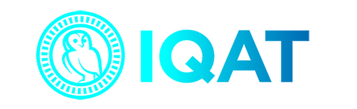
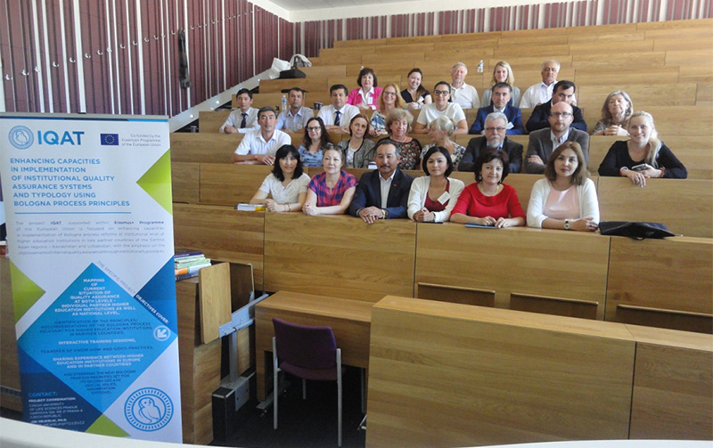
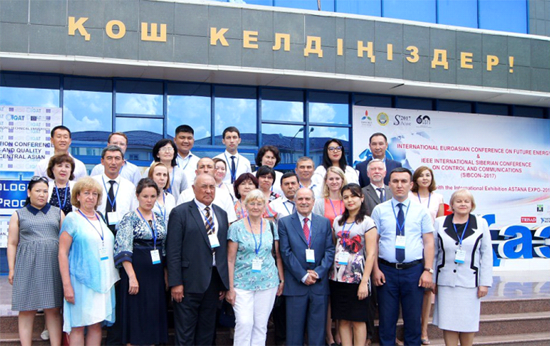
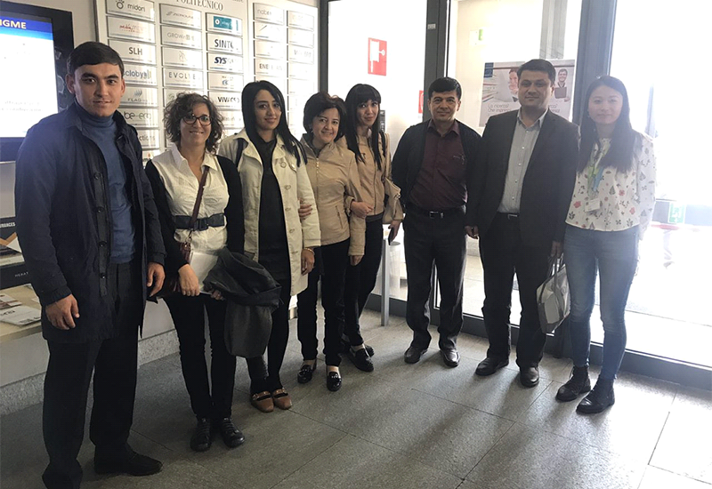
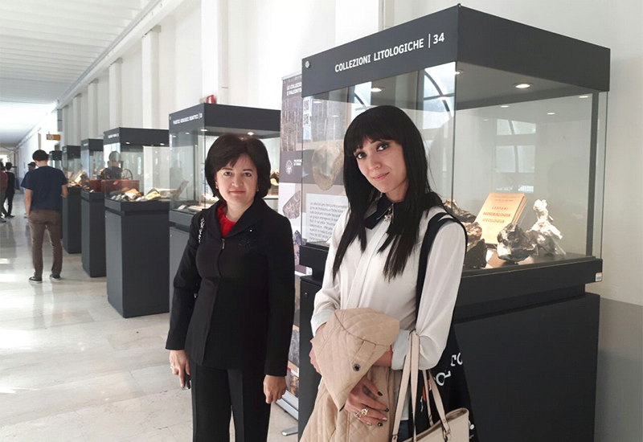

Руководитель отдела международных связей, Доктор наук

1. Название проекта
561685-EPP-1-2015-1-CZ-EPPKA2-CBHE-JP
IQAT: Усовершенствование потенциала в целях реализации институциональных систем обеспечения качества и типологии с использованием основ Болонского процесса.
2. Срок реализации проекта
15/10/2015-14/10/2017
3. Бюджет в Евро (согласно заявке)
722,195.00
4. Грантополучатель и партнеры в Европейском Союзе
Чешский университет естественных наук (Чехия), Центр исследований высшего образования (Чехия), университет Аликанте (Испания), Латвийский университет (Латвия), университет
Константина Философа в Нитре (Словакия).
5. Получатели
Казахстан: Казахский агротехнический университет, Карагандинский государственный технический университет, Международная образовательная корпорация;
Узбекистан: Ташкентский химико-технологический институт
(ТХТИ), Андижанский государственный университет (АндГУ), Самаркандский сельскохозяйственный институт (СамСХИ).
6. Вебсайт
http://www.project-iqat.eu/
7. Цели проекта
- изучение ситуации в области обеспечения качества в странах-партнерах и их вузах;
- определение принципов Болонского процесса, применимых в вузах СП, интерактивное обучение с использованием опыта между вузами СП и СУ; установление институционального профиля вузов стран-партнеров с применением методологии U-карта
(U-map);
- разработка новой внутренней системы обеспечения качества (ОК), инновационной и модифицированной, в вузах СП. Процесс будет начат с разработки первого варианта системы ОК, затем её пробное применение с участием команд
экспертов из вузов СУ и консультирование, в результате чего будет подготовлена окончательная версия ОК с учетом государственных требований/вузовских уставов и положений, а также Европейских стандартов и рекомендаций.
8. Ожидаемые результаты
В качестве основных результатов проекта будут представлены 6 внутренних систем обеспечения качества, 6 докладов по самооценке и итоговый сводный отчет (включая описание исследований, учебные материалы,
аналитическая часть, национальные и сравнительные исследования). Свободный доступ к данным материалам будет обеспечен для всех заинтересованных сторон и после завершения проекта (в качестве подтверждения устойчивости результатов проекта).
5-6 сентября 2017 года в Ташкентском химико-технологическом институте состоялась научно-практическая конференция с участием международных специалистов на тему «Актуальные проблемы усовершенствования
системы обеспечения качества в высших образовательных учреждениях».
Конференция была организована в рамках проекта «IQAT: Усовершенствование потенциала с применением
институциональных систем обеспечения качества и типологии с использованием принципов Болонского
процесса» который реализовывался в рамках программы Erasmus+.
В данном проекте Ташкентский химико-технологический институт сотрудничал с нижеследующими вузами и организациями:
1. Чешский агротехнический университет (Чехия);
2. Центр высшего образования (Чехия);
3. Университет Аликанте (Испания);
4. Латвийский университет (Латвия);
5. Университет имени Константина Философера в Нитре
(Словакия);
6. Казахский агротехнический университет имени С.Сейфулина;
7. Международная образовательная корпорация (Казахстан);
8. Карагандинский государственный технический университет (Казахстан);
9. Самаркандский
сельскохозяйственный институт;
10. Андижанский государственный университет.
Цель проведения конференции – обсуждение результатов проделанной работы в рамках проекта IQAT, подведение итогов и распространение полученных данных среди заинтересованной аудитории- преподавателей, научных сотрудников и студентов.
В работе конференции приняли участие представители из числа вузов и организации партнёров, а также представители из ВУЗов республики. Со вступительным словом, посвящённым вкладу международных проектов в повышение качества
образования выступил ректор ТХТИ, д.х.н. Ш.Муталов.
Активное участие в конференции приняли эксперты Национального офиса Эрасмус плюс в Узбекистане - Кудратхон Бахадиров, Назокат Касимова, Зебо Исакова.
В выступлениях зарубежных партнеров были освещены такие вопросы, как система обеспечения качества в Чешском университете естественных наук (доклад координатора проекта IQAT Jiri Hejkrlik), Университете Аликанте (доклад Denise
Galvin), система Высшего образования в Латвии на примере Латвийского университета (доклад Agnese Rusakova). Научный сотрудник Центра изучения высшего образования Jan Beseda выступил с докладом по теме «Внедрение U-map в Казахстане:
риски и выгоды».
Министерство высшего и среднего специального образования Республики Узбекистан и преподаватели ряда ВУЗов Республики проявили высокую заинтересованность в конференции. С пленарными докладами выступили проректор Ташкентского
университета информационных технологий Ботир Усманов, старший специалист МВССО РУз Абдували Исмаилов, декан Самаркандского сельскохозяйственного института Фарход Ахроров, Дилшодбек Нурматов c Андижанского государственного университета,
Э.Юлдашев из Государственного института искусств и культуры Узбекистана.
В презентациях докладчиков был представлен опыт реализации проектной работы с использованием современных информационно-коммуникативных технологий и онлайн-инструментов.
Завершилась работа конференции подведением итогов реализации проекта «IQAT: Усовершенствование потенциала с применением институциональных систем обеспечения качества и типологии с использованием принципов Болонского процесса»,
выявлением и поддержанием положительных инициатив, обсуждением проблем и перспектив работы по различным направлениям деятельности образовательной программы Erasmus+.
Участники конференции имели возможность не только выступить с докладами, но и обменяться мнениями, задать вопросы, выступить с комментариями и мнениями. Всеми участниками было отмечена важность и необходимость подобных встреч,
а работа именно в формате конференции позволила достичь основной цели, поставленной организаторами конференции, а именно - концентрации, систематизации и распространения научных, образовательных и воспитательных идей, исследований
и технологий по реализации международных проектов различной направленности.
Название проекта: IQAT: Усовершенствование потенциала в целях реализации институциональных систем обеспечения качества и типологии с использованием основ Болонского процесса (561685-EPP-1-2015-1-CZ-EPPKA2-CBHE-JP)
Продолжительность проекта: Октябрь 2015-Октябрь 2017 г.г.
Достигнутые результаты: В рамках проекта IQAT в ВУЗах-партнерах из Узбекистана и Казахстана была проведена внутренняя оценка качества образования и разработан
обновленный документ об обеспечении качества и усовершенствовании внутреннего мониторинга в ВУЗах Узбекистана и Казахстана -«Программа действий по обеспечению качества».
Внутренняя оценка качества проводилась в соответствии
с “Европейскими стандартами и рекомендациями” (ESG, 2015). Для обеспечения процедуры самооценки в ВУЗах Узбекистана были выбраны пять основных областей ESG:
Анкеты-опросники были размещены на веб-сайте института и распространены
через социальные сети среди студентов и др. заинтересованных сторон, проведен сбор и анализ результатов. Результаты аналитических наблюдений были обсуждены на Советах ВУЗов, на международных семинарах и конференциях, в частности на
конференции в г. Праге “14th International Conference Efficiency and Responsibility in Education-2017”, а также конференции в Астане “International Dissemenetion Conference Bologna principles and quality assurance at EU and Central
Asian HEIs”. Заключительная конференция «Актуальные проблемы усовершенствования системы обеспечения качества в высших образовательных учреждениях» по проекту проведена в ТХТИ 5-7 сентября 2017 году

Июнь 2017 г. Участники конференции в г. Прага, Чешский университет естественных наук.
Июль 2017 г. Участники конференции в г. Астана, Казахский агро-технический университет им. С.Сейфуллина.
Проект: «UZDOC 2.0: Улучшение качества докторского образования в высших учебных заведениях Узбекистана».
Срок реализации проекта - 3 года, начиная с 15 октября 2016 года.
Грантополучателем проекта является UNICA - Ассоциация университетов европейских столиц (Бельгия). Наряду с Ташкентским химико-технологическим институтом в состав проектного консорциума входят Каракалпакский государственный университет,
Каршинский государственный университет, Наманганский государственный университет, Самаркандский институт экономики и сервиса, Ташкентский финансовый институт. Государственный институт искусств и культуры Узбекистана, Министерство высшего
и среднего специального образования, а также Политехнический университет Турина (Италия), Университет Гранада (Испания), Свободный университет Брюсселя (Бельгия), Университет Этвёш Лоранд (Венгрия).
Цель проекта: Проект UZDOC 2.0 в целом нацелен на улучшение качества докторского образования в вузах Узбекистана, и будет основываться на результатах предыдущего проекта, осуществленного под руководством UNICA. Проект состоит
из 4 элементов, которые являются важными для успешной реализации реформы докторского образования в Узбекистане – структуры институциональной поддержки, интеграции элементов и механизмов обеспечения качества, усовершенствование кадровых
ресурсов, и налаживание устойчивых связей с сектором предпринимательства и индустрии в Узбекистане.
Ожидаемые результаты в рамках проекта: Проект окажет существенное влияние на наращивание потенциала участвующих вузов Узбекистана в целях развития и модернизации качества докторского образования. Консорциум составлен таким образом,
чтобы привлечь высококвалифицированные кадры с европейской стороны, с предложением надлежащего географического охвата, потенциала по распространению и использованию, а также с учетом широкого спектра участия взаимодополняющих узбекских
партнеров и заинтересованных сторон.
Во время реализации проекта UZDOC 2.0 сектор докторского образования в Узбекистане поднимется на уровень последних европейских тенденций развития, объединяя передовой опыт и методологию,
что позволит улучшить решение вопросов, стоящих перед секторами науки и экономики Узбекистана.
Свои пожелания и рекомендации для успешной реализации данного проекта просим направить на эл. почту Отдела международных связей
tcti_iro@umail.uz
Контактное лицо проекта: Зебо Бабаханова.
e-mail: zebo.babakhanova@gmail.com.
Семинар-тренинг в Туринском политехническом университете Турин, Италия, 9-13 октября 2017 года
В течении рабочей недели с 9 по 13 октября 2017 года группа координаторов проекта Erusmus+ UZDOC 2.0 из 6 университетов Узбекистана: З.Бабаханова из Ташкентского химико-технологического института, У.Халиков из Ташкентского финансового института, П.Лутфуллаев из Наманганского государственного университета, Г.Арипова из Узбекистанского государственного института искусства и культуры, А.Курбанов из Каршинского государственного университета, Ш.Кадырова из Самаркандского института экономики и сервиса участвовали в семинаре-тренинге, организованном по плану проекта в Туринском политехническом университете (Италия).В течении семинара группа координаторов ознакомилась со структурой университета и возможностями, созданными здесь для получения образования на всех уровнях - бакалавриата, магистратуры и докторантуры.
Туринский политехнический университет (Politecnico di Torino) - основанный в 1859 году, является старейшим техническим университетом Италии и одним из ведущих инженерных колледжей Европы. Университет предлагает множество учебных программ и возможностей для научно-исследовательской работы в области технических наук, архитектуры, компьютерных технологий и промышленного дизайна. В мировом рейтинге университетов QS World University Ranking факультет Инженерного дела и технологий Туринского политехнического университета занимает 66 место.
В 2016-2017 учебном году здесь обучались более 33000 студентов по 28 программам бакалавриата, 32 магистрским и 24 PhD программам. Более 30% учебных программ преподаются на английском языке, в связи с чем количество обучающихся иностранных студентов составляет более 16 %, из них более 2,3 % являются гражданами Узбекистана.
Нововведением является введение новых учебных программ в рамках Школы непрерывного обучения, это хороший пример адаптации высшего образования к быстро меняющимся требованиям рынка труда. В настоящее время предприятия требуют, чтобы выпускники имели многообразные практические навыки, и эти требования очень быстро меняются из-за активного развития технологий. Особенно интересной с этой точки зрения является возможность организации специализированных магистерских программ 1-го и 2-го уровня. Магистерские программы 1-го и 2-го уровня предназначены для обучения прикладным навыкам в непосредственной связи с конкретным предприятием. Срок обучения составляет 10-11 мес., из которых 3-4 месяца занимают аудиторные занятия, остальное время – практика и обучение на предприятии.
Большое внимание в университете уделяется многосторонней поддержке всех видов академической мобильности студентов и преподавателей, от поддержки языковых курсов до информационной поддержки этих программ.
В университете функционирует один из самых инновационных в Европе бизнес-инкубаторов в области технологий - I3P Incubatore. Бизнес-инкубатор занимается поддержкой проектов молодых учёных и предпринимателей на всех этапах развития: от разработки идеи до её коммерциализации. Более половины всех программ бизнес-инкубатора являются «многофункциональными» проектами, они работают с клиентами из различных отраслей промышленности.
Еще одним хорошим примером для изучения и внедрения является онлайн-служба трудоустройства, предоставляемая университетом. Наличие такой системы, которая предоставляет бесплатные услуги как студентам, так и нанимающим компаниям, способствует быстрому и успешному трудоустройству выпускников. Трудоустройство выпускников магистратуры университета в течении первого года после выпуска составляет 74,5% (средний показатель по Италии – 60%), 42 % получают при этом постоянный контракт (средний показатель по Италии – 34%). Мы уверены, что полученный опыт будет способствовать повышению качества образования в Узбекистане. 
Визит в I3P бизнес-инкубатор: У.Халиков, К.Жиордано, Г.Арипова, З.Бабаханова, Ш.Кадырова, А.Курбанов, П.Лутфуллаев (слева направо).
Коллекция минералов, представленная в университете.
Вверх